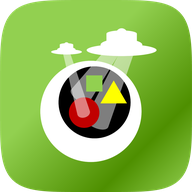

먼저, 재료를 손질해 볼까요?
가진 재료에 맞는 길을 하나 골라요
이미 만든 앱이 있다면
AI에게 이 프롬프트와 앱 폴더를 주면 비빔에서 실행되게 바꿔 줘요
새로 만든다면
AI에게 이 프롬프트를 붙여 넣고 앱을 만들어 보세요
주소만 필요하면
비비는 법 레시피
처음이라면, 눌러 보며 익혀요
비빔 재료
내려받아 플레이어의 [＋ 나의 앱 추가]에 넣어 보세요
이제 준비가 되셨나요?
함께 비비러 출발!
BeBeam 실행
Beam으로 전송하는 Webapp Launcher
index.html + JavaScript, CSS로 만든 모든 앱
가진 재료에 맞는 길을 하나 골라요
AI에게 이 프롬프트와 앱 폴더를 주면 비빔에서 실행되게 바꿔 줘요
AI에게 이 프롬프트를 붙여 넣고 앱을 만들어 보세요
주소만 필요하면
처음이라면, 눌러 보며 익혀요
내려받아 플레이어의 [＋ 나의 앱 추가]에 넣어 보세요
함께 비비러 출발!
BeBeam 실행